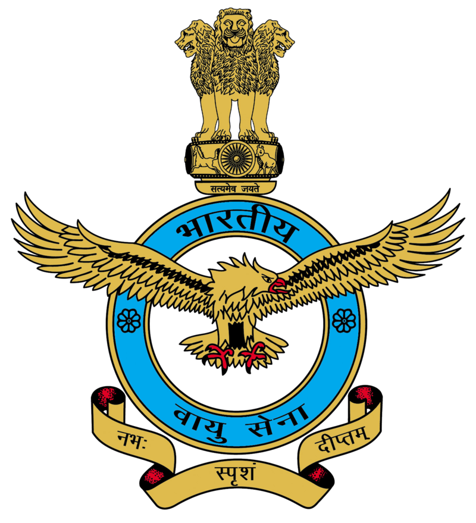
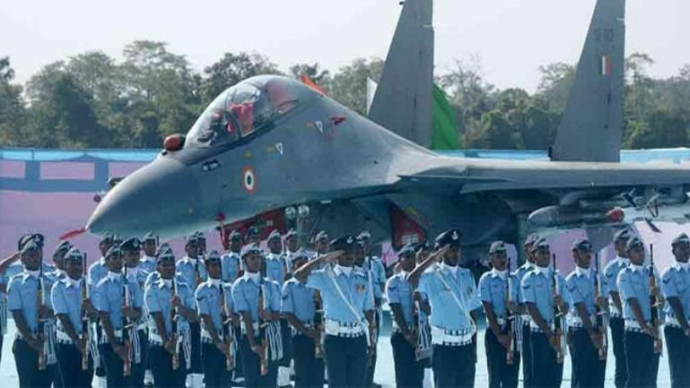
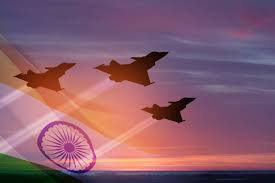
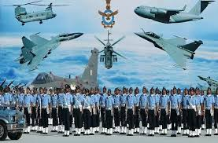
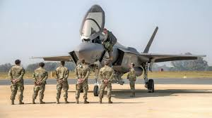
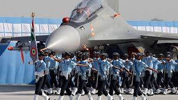

INDIAN AIR FORCE



The President of India holds the rank of Supreme Commander of the IAF.[9] As of 1 January 2025, 135,000
personnel are in service with the Indian Air Force.[10][11] The Chief of the Air Staff, an air chief
marshal, is a four-star officer and is responsible for the bulk of operational command of the Air Force.
There is never more than one serving ACM at any given time in the IAF. The rank of Marshal of the Air Force
has been conferred by the President of India on one occasion in history, to Arjan Singh. On 26 January 2002,
Singh became the first and so far, only five-star rank officer of the IAF.[12]


